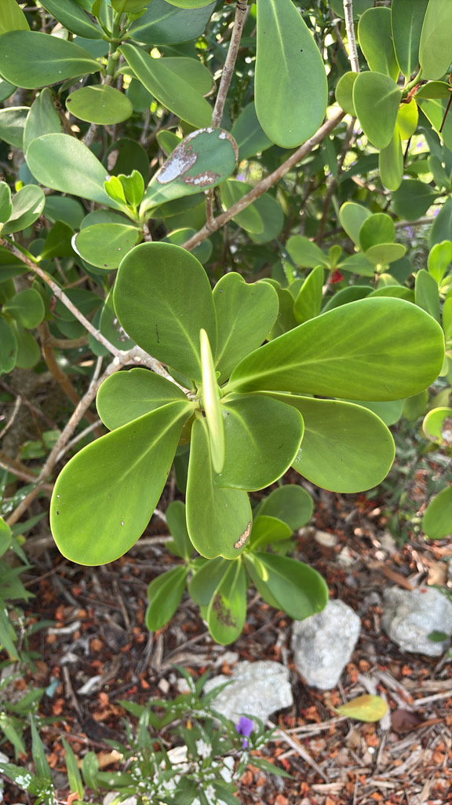

- Sailors didn't eat the pitch apple — they boiled the black, tar-like resin from ripe capsules to caulk wooden ship seams. The fruit was a hardware item, not a food.
- Every Pitch Apple in Florida is almost certainly female, and every seedling is a genetic clone of its mother. The tree reproduces via apomixis — viable seed, zero pollination required. One bird dropping can sprout an entire identical lineage.
- The thick, waxy leaves hold a physical scratch indefinitely — which is why people have been carving their names into them at botanical gardens for generations. You may find fresh autographs on this very tree.
- The resin-oozing structures on the flowers aren't stamens — they're staminodes, sterile versions modified purely to produce building material for bees. No pollen, no nectar: just raw construction resin, on purpose.
Clusia rosea is native to southern Florida — primarily the Keys — and ranges widely through the Caribbean, the Bahamas, Mexico, Central America, and northern South America from Colombia to Venezuela. It belongs to the family Clusiaceae, which also claims the mangosteen and is distantly related to St. Johnswort.
In Florida, the species is associated with maritime hammocks, rockland hammocks, and coastal berms. Wild populations in the Keys are sparse and may exist mainly as escapes from cultivation; the Atlas of Florida Plants notes that botanists have debated the species' true nativity since at least the 1960s. It is now far more commonly encountered as an ornamental than as a wild tree.
- The Pitch Apple is what botanists call a hemiepiphyte — it can start life perched on a rock or in the fork of another tree, extending aerial roots downward until they reach soil, much like a strangler fig.
- In Florida's coastal hammocks that habit is rarely on dramatic display, but the prop roots and aerial roots that form on established landscape trees are a visible reminder of this growth strategy.
- The flowers open at night and may stay receptive into the morning on overcast days, which is when you are most likely to catch them fully open during a park visit. They are showy and magnolia-like — white to pale pink, two to three inches across — and appear near the branch tips in summer.
- Despite their appearance, the flowers on Florida trees produce no pollen; the stamens are modified into resin-secreting staminodes instead.
- The genus Clusia contains roughly 300 to 400 species, almost all native to tropical America, and C. rosea is the one most widely grown as an ornamental worldwide. UF/IFAS notes it is greatly admired as a street and garden tree in Cuba and the Virgin Islands, and it has been introduced — sometimes with regret — to Hawaii, Sri Lanka, and other tropical regions where it has become invasive.
Forget nectar. The Pitch Apple trades in a stranger currency: raw construction material. The flowers' modified, pollen-free stamens — technically staminodes in the pistillate flower — ooze a thick, sticky resin that native and introduced bees harvest directly to waterproof and cement their nests. It is mutualism, renegotiated on entirely different terms than a butterfly on a bloom.
The ripe fruit earns the tree its second round of wildlife credit. Woody capsules split to reveal bright red arils over dark seeds, and birds find them irresistible. Seed dispersal is almost entirely bird-driven — which is both the tree's ecological strategy and the reason it spreads so readily beyond planted areas. The dense canopy also provides reliable shelter and nesting cover year-round.
Clusia rosea reproduces by seed and by cuttings in cultivation. Remarkably, Florida trees produce viable seed without any pollination — a process called apomixis, or asexual seed production. Every seedling is a genetic clone of its mother, and a single seed can carry more than one embryo, meaning one fruit can produce multiple identical plants.
Showy, waxy, white to pale pink flowers two to three inches across appear near branch tips in summer, opening at night and sometimes remaining open through the morning on overcast days. The stamens on Florida trees do not produce pollen; instead they are modified into staminodes that secrete a sticky resin bees collect for nest-building.
A rounded, fleshy, light green capsule roughly three inches in diameter follows the flowers. As it matures it turns darker and eventually splits open to reveal bright red, aril-covered seeds embedded in a black, tar-like resinous material. That resin is the source of the common name 'pitch apple.' The fruit itself is toxic; the seeds inside are eaten safely by birds.
Broadly oval to paddle-shaped, thick, leathery, and dark green — reminiscent of a Southern magnolia leaf but blunter. Leaves are arranged in opposite pairs and can reach six to eight inches long. The waxy surface retains scratches made with a fingernail, a trait that has given the tree its 'autograph tree' nickname.
Typically multi-trunked with a short main trunk and drooping branches. Older trees develop prop roots from the base and aerial roots from lower branches — a hemiepiphytic habit that can allow the tree to gradually expand its footprint if the roots are not managed. Bark is gray-brown, mostly smooth, with a slightly warty texture.
Start with the leaves: thick, dark green paddles arranged in opposite pairs on the branches, with a surface firm enough to scratch a message into. Look for the multi-trunked, low-spreading form and, on older specimens, prop roots or aerial roots descending from the lower branches.
In summer, watch the branch tips for the large waxy flowers — they open at dusk, so overcast mornings give the best chance of finding them open. When the fruit is present, look for the green capsules ripening toward dark, then splitting to show the bright red and black interior.
Do not eat the fruit — it is toxic to people, and the ASPCA lists the plant as toxic to dogs, cats, and horses as well, with terpenes as the active compounds; the fruit is the most toxic part of the plant, and ingestion can cause digestive upset, vomiting, and in larger amounts more serious effects.
The seeds inside the split fruit are safely eaten by birds, but that is not a guide to human safety. The sap that oozes from broken leaves or stems is a sticky white latex that can mildly irritate skin or mucous membranes on contact. If a pet has eaten any part of this plant, contact your veterinarian or the ASPCA Animal Poison Control Center at (888) 426-4435.
In the nursery trade, Clusia rosea is frequently confused with — or simply replaced by — Clusia guttifera (small-leaf clusia), a non-native species without the large flowers or the documented Keys heritage. UF/IFAS Sarasota notes that the 'guttifera' name is not yet in formal taxonomic databases, and true C. rosea is far less common in retail nurseries than labeled plants suggest.
If you want the genuine native, source it from a Florida native-plant nursery.
This species is rated for USDA Hardiness Zones 10B through 11 by UF/IFAS. Bradenton sits in Zone 10A, which means established specimens here can be stressed or defoliated in an unusually cold winter. The tree at Palma Sola Botanical Park is a good local example of what this species can achieve at the northern limit of its comfort zone.


- © Seth Layne (CC-BY-NC), via iNaturalist
- © Ruby Meador (CC-BY-NC), via iNaturalist